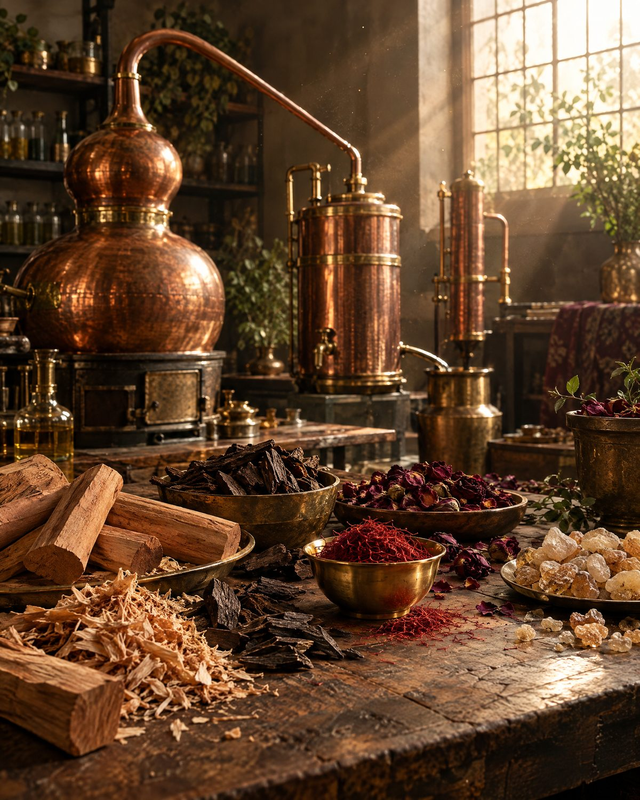

Oud & Amber
Saffron • Amber • Indian Oud
“The warmth of amber. The glow of saffron. The depth of Indian Oud.”


Our Story
The Story of MASAÉ
We are a fragrance manufacturing company. For years, we have been creating fragrances for other products — fragrances designed to make incense, candles, detergents, spaces and everyday experiences smell beautiful.
And somewhere along the way, we asked ourselves:
“If we can create beautiful fragrances for everyone else, why not create something that is entirely ours?”
That question became MASAÉ.
We decided that if we were going to create our own fragrance house, we would do it differently. We chose to put more into the fragrance itself and the experience it creates, rather than spending heavily on elaborate packaging or conventional marketing.
Because to us, the true luxury of a fragrance is not what surrounds it.
“It is what remains in the air after you have left.”
MASAÉ came to life when everything seemed to fall into place at exactly the right time — the knowledge, the craftsmanship, the materials, the experience and the desire to create something that could finally carry our own name.
Today, we are more than happy to open those doors and share MASAÉ with the world.
From Grasse to Kanpur
France
From Grasse, the historic heart of modern perfumery, came the education, discipline and understanding of the craft. It was there that perfumery was studied not simply as a formula, but as an art — the understanding of materials, proportions, balance, diffusion, texture and emotion.

India
That knowledge travelled back to India. A city known for its industry, enterprise and manufacturing spirit — and home to our fragrance manufacturing facility. Here, the traditions and techniques learned in Grasse meet Indian raw materials, Indian craftsmanship and decades of manufacturing experience.
“Grasse gave us the language.
Kanpur gave us the place to speak it.”
MASAÉ is where those two worlds meet.
The MASAÉ Philosophy
It should be the reason you remember something.
01
Exceptional fragrance
02
Thoughtful materials
03
Honest craftsmanship
04
An experience that speaks for itself
We do not begin with a bottle and ask what fragrance should go inside it. We begin with the fragrance. We explore materials, origins, textures and contrasts. We allow the fragrance to lead, and everything else to follow.
Our fragrances are made to be experienced slowly. To linger. To become familiar. And eventually, to become a memory.
The Current MASAÉ Collection
Saffron • Amber • Indian Oud
“The warmth of amber. The glow of saffron. The depth of Indian Oud.”

Mexican Tuberose • Creamy White Florals
“White petals. Warm air. A floral trail that refuses to be forgotten.”

Indian Sandalwood • Creamy • Woody
“Creamy sandalwood. Soft woods. Warm skin.”

French Rose • Creamy Florals • Soft Elegance
“A rose with softness. A floral with texture. A fragrance with a velvet touch.”
India, Through the Language of Fragrance
India has always possessed an extraordinary relationship with fragrance — from sandalwood and oud to flowers, spices, resins and traditional perfumery. We wanted to take that heritage and look at it through a contemporary, international perspective.
That is why an oud from Assam can sit beside saffron and amber. Why Indian sandalwood can become the centre of a modern creamy composition. Why a rose from France and tuberose from Mexico can find their place within an Indian fragrance house.
Because fragrance has no borders.
And now, MASAÉ travels with them.
Why We Created MASAÉ
It was created because after years of making fragrances for other people, we wanted to make something that represented what we believe fragrance can be.
Something where the fragrance comes first. Something created with the knowledge of a manufacturer, the curiosity of a perfumer and the sensitivity of an artist. Something born in India, informed by the world and made without compromising the experience.
We have spent years behind the scenes creating fragrances for others.
Now, we are stepping into the light.

A fragrance house from Kanpur, India. Born between Grasse and Kanpur. Made from materials gathered across the world. And created for anyone, anywhere, who believes that fragrance can become a memory.
Product of India. For the World.
Write to us